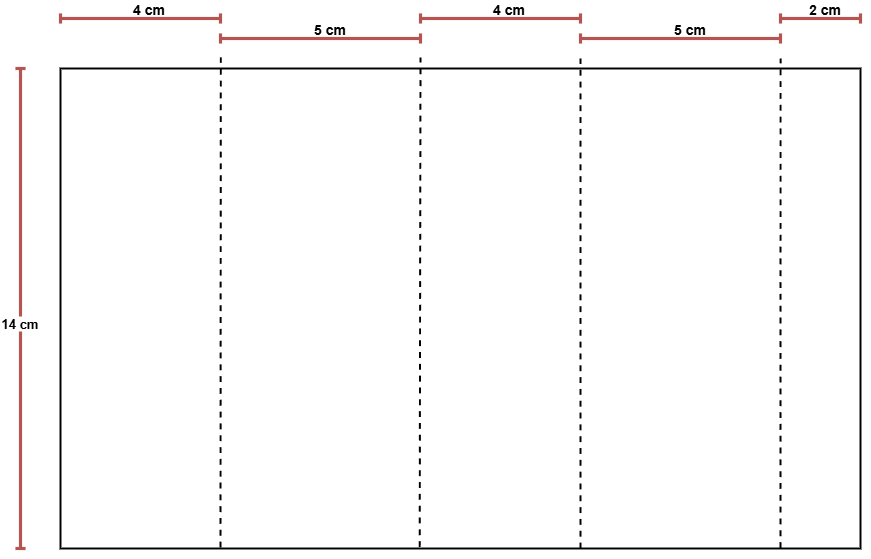
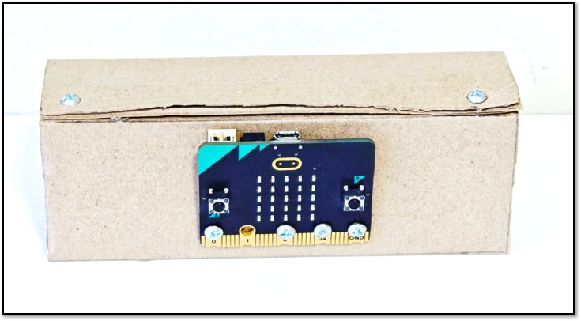
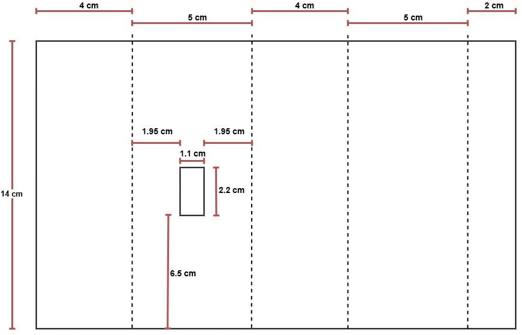
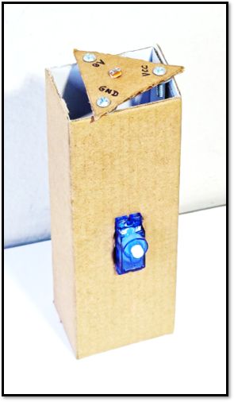
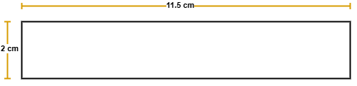
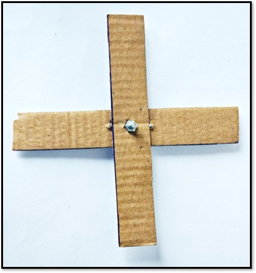
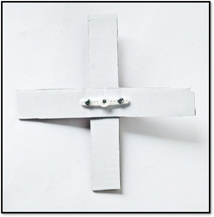

En las siguientes pestañas se mostrarán los planos de las estructuras para instalar el microbit, el módulo LDR y el servomotor de rotación continúa. Se necesita una estructura para el MICROBIT y una estructura para instalar el servomotor con el módulo LDR.
Estructura para el Microbit
En el siguiente plano se encuentran las medidas de la estructura. Recuerda que las líneas punteadas significan un doblez y las líneas continuas serán recortadas con la ayuda de una tijera. Recuerda utilizar cartón de 2 o 3 milímetros de espesor.
| Plano | Estructura armada |
|  |  |
Estructura para el servomotor y el módulo LDR
En el siguiente plano se encuentran las medidas de la estructura. Recuerda que las líneas punteadas significan un doblez y las líneas continuas serán recortadas con la ayuda de una tijera. Recuerda utilizar cartón de 2 o 3 milímetros de espesor. El módulo LDR se colocará encima de la estructura armada y esto se aprecia en la imagen de la derecha.
| Plano | Estructura armada |
|  |  |
Aspas
A continuación se encuentran los pasos para crear una aspa simple y unirla con el accesorio del servomotor. Se sugiere utilizar la cinta de doble contacto para mejorar la adherencia del accesorio del servomotor con el eje del mismo.
| Plano: crear dos aspas con las medidas indicadas. | Paso 1: Unir dos aspas con un tornillo y tuerca. | Paso 2: Insertar el accesorio del servomotor en lado opuesto de la union de las aspas. |
|  |  |  |